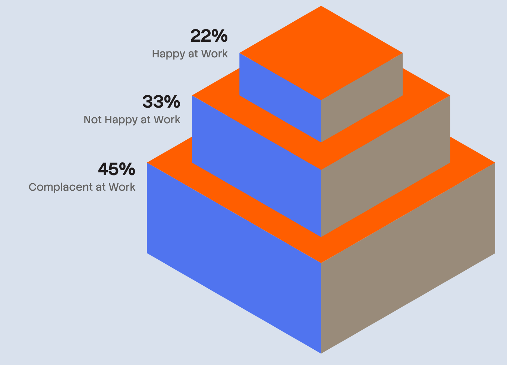
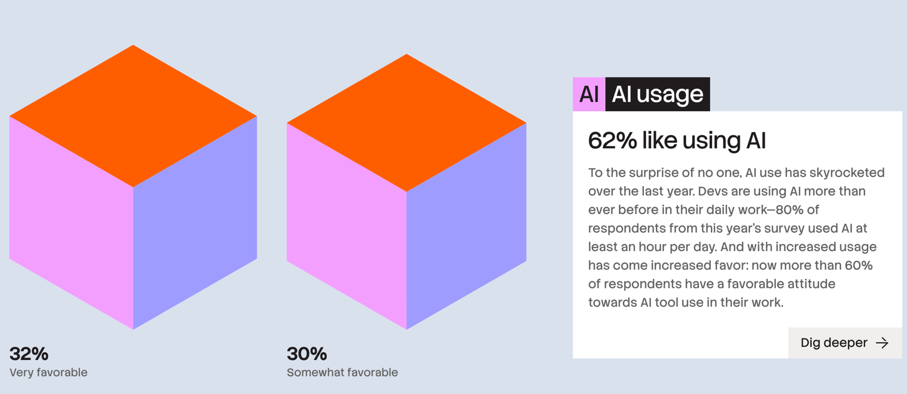
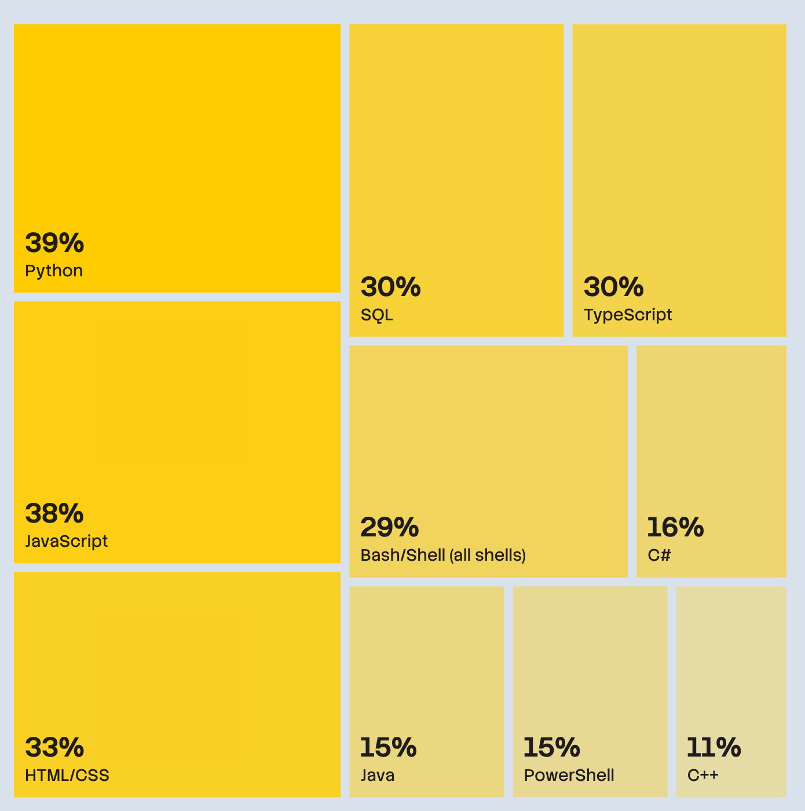
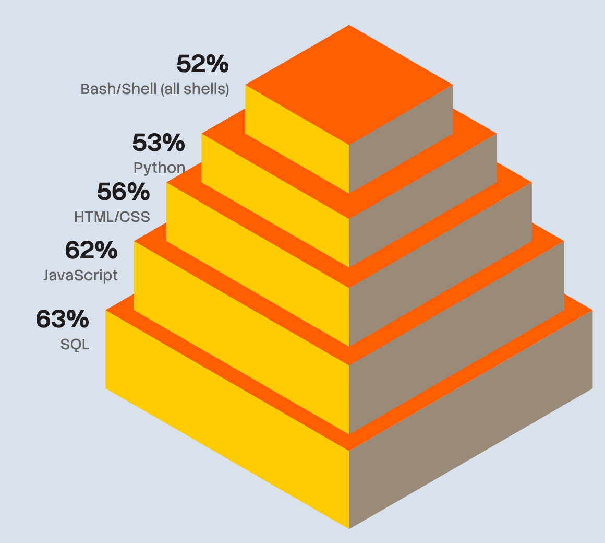
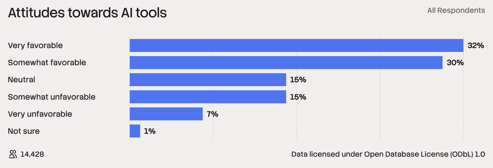

Research Skills — Week 2 Application
Today's exercises
Produce briefing-quality figures of the biomass data.
By the end of this session:
| Figure | What it shows |
|---|---|
| Trend plot | Biomass generation over time |
| Comparison plot | CO₂ per MWh: biomass vs coal vs gas |
| Import plot | Where do the wood pellets come from? |
| Context plot | Biomass as % of total UK electricity |
💬 Homework follow-up

Volume encodes nothing: the 45 % tier looks many times the size of the 22 % one. And “not happy” sits between happy and complacent.

Two cubes the same size, for 32 % and 30 %. Where are the other 38 %? And only 14 428 of the 30 903 respondents answered.

The parts add up to 296 %. Respondents could pick several languages, so these aren’t shares of a whole.

52 % sits on top of 63 %, and the tiers shrink far faster than the numbers. A pyramid implies a hierarchy that isn’t there.

Every answer shown, in scale order, every bar labelled, n stated. Their caption even says: “This is not proof … but they are certainly related.”
🎓💻 Building a biomass figure
| Type | Example | In R |
|---|---|---|
| Number | 41 TWh | numeric |
| Text | “Drax” | character |
| Category | coal, gas, wind | factor |
| Ranked category | clay < silt < sand < gravel | ordered factor |
Text sorts alphabetically; you define how a factor sorts.
🖥️ Building a multi-fuel line chart in WebR
Every figure should have a “so what” — what should the reader take from it?
✏️💻 Independent exercises
The WebR page has four main exercises with hints:
Extension: Can you make biomass look more important — or less important — than it really is?
Data → Aesthetics → Geometry: ggplot(data, aes(...)) + geom_*()
| If your plot… | Turn to… | For example |
|---|---|---|
| has the wrong rows, or the wrong shape (one column per fuel) | Data: fix it before ggplot() |
pivot_longer(), factor(), a new column |
| shows the wrong column, or no colour or legend | Aesthetics: which column drives which channel | aes(x = …, y = …, colour = …) |
| draws the wrong kind of mark | Geometry: the mark that shows those channels | geom_line(), geom_col(), geom_point() |
Labels, axis ranges and themes come last: labs(), coord_cartesian(), theme_*().
🖥️ Watch, or save along with me
week2.R lands in Downloadsweek2.R, not just week2week2.R into your repo folderThe ending tells your computer what’s inside: .R code, .csv data, .md text, .png image.
💬 What story do your figures tell?
“What story do your figures tell?”
I’ve sourced some figures from volunteers.
Export your code as week2.R, add it to your repo folder, then commit and push.
Your repo now has two weeks of work:
week1.R — exploratory codeweek2.R — figuresNext week: “How confident should we be?”
We’ll ask whether the biomass numbers really add up.